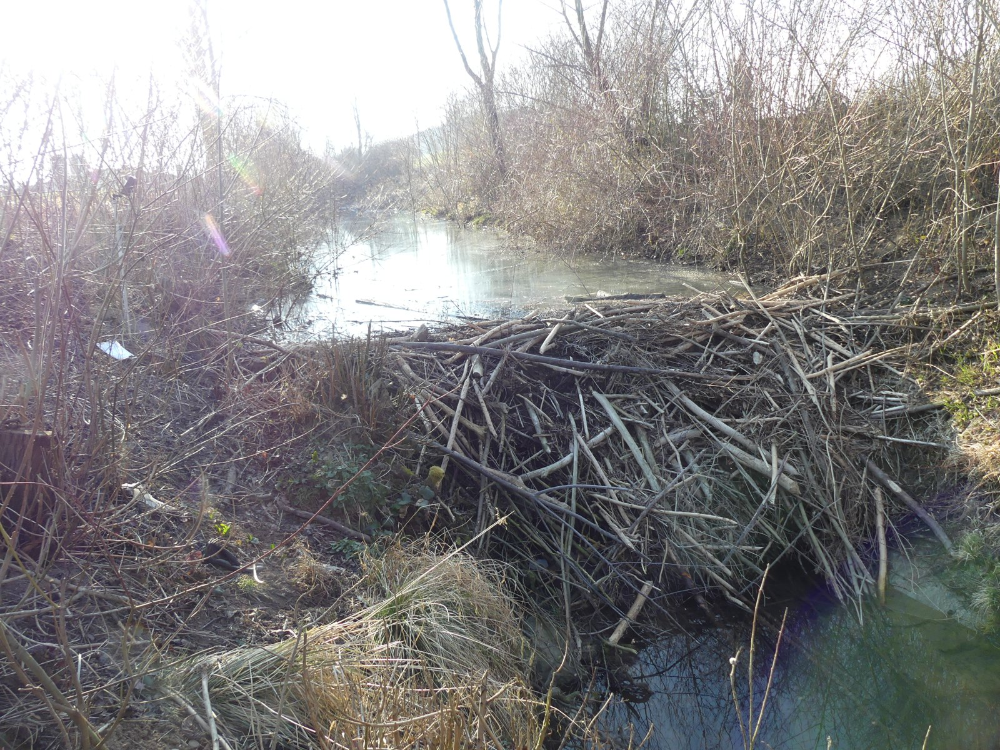
Beavers and their influence on terrestrial–aquatic ecosystems
2023–2025
My postdoctoral research at the Swiss Federal Institute for Forest, Snow and Landscape Research (WSL) and Eawag, the Swiss Federal Institute of Aquatic Science and Technology, within the project Species interactions in beaver-engineered habitats link land–water ecosystem processes, funded by the Blue-Green Biodiversity Research Initiative, a joint Eawag–WSL programme on the interface between aquatic and terrestrial biodiversity. The project ran from 2021 to 2025; I joined it in 2023.
Project description
Beavers are the textbook ecosystem engineer. By felling trees and building dams they convert a fast, narrow, shaded stream into a mosaic of ponds, wetland and open canopy — and in doing so they redraw the boundary between the land and the water. Fallen wood and leaf litter enter the channel, water slows down and warms, light reaches the water surface, and the flooded margins turn terrestrial soil into aquatic habitat.
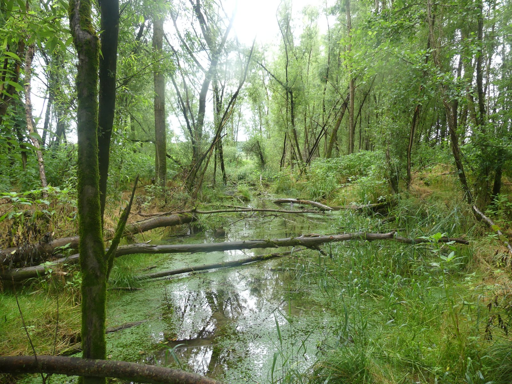
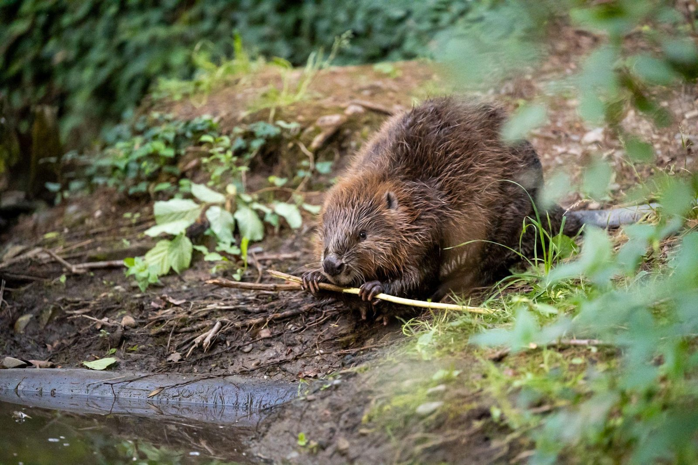
The project asked what that engineering does to the interactions between organisms on either side of that boundary, and what those altered interactions mean for how the ecosystem functions.
The design compares streams and their surrounding riparian areas with and without beaver activity, across beaver-engineered ecosystems spanning gradients from open farmland to closed forest and from low to high human pressure. Abundances and traits were recorded for interacting terrestrial and aquatic organisms — from bats and birds to macroinvertebrates, plankton and microbes — alongside direct measurements of ecosystem processes.
My role
I was the postdoctoral researcher on the project, affiliated with WSL and Eawag. My own work asks to what extent, and when, beavers influence dissolved organic carbon (DOC) and nutrient concentrations in streams — that is, whether a beaver-engineered reach acts as a source or a sink of carbon and nutrients, and which conditions decide which of the two it is. It uses a paired design: water is sampled immediately upstream and immediately downstream of each beaver-engineered reach, and the difference between the two is the outcome.
I also co-advise the Ph.D. student Valentin Moser (WSL & Eawag) on the project, and contributed the statistical analysis to the biodiversity papers listed below.
This study is currently under review. The description and figure below reflect the work as I presented it publicly; the results are not yet peer-reviewed.
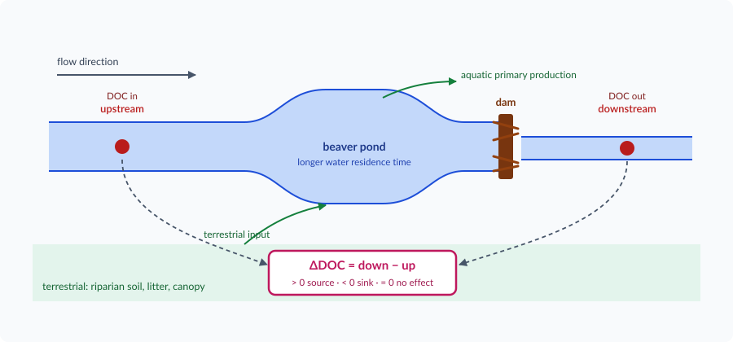
Framing it as a difference rather than an absolute concentration matters: it removes the catchment the stream happens to drain, and isolates what the beaver does. The same paired logic applies to the nutrients.
Within the Blue-Green Biodiversity initiative itself we sampled 16 sites. Through the collaboration with Annegret Larsen, Joshua R. Larsen and Christof Angst, we then raised the sample size to 176 sites, which gives nutrient concentration data over a far broader spatial range — enough to ask whether the beaver effect holds across very different catchments, land uses and stream types, rather than only at the handful of streams one project can visit.
The full account of this work, and the reference for everything described above, is the talk I gave at the 13th Workshop on Floodplain Ecology at WSL on 14 March 2024: Beavers influence stream dissolved organic carbon by coupling terrestrial–aquatic ecosystems (PDF), also listed on my Science Communication page.
Ongoing: do beavers reshape the arthropod size spectrum?
A second strand of my work on the project — still in progress — asks what beaver damming does to the individual size distribution (ISD) of the arthropod community, on both sides of the land–water boundary.
The ISD, known in the aquatic literature as the size spectrum, is the relationship between an individual’s body mass and how common that mass is in the community. It is usually described by a power law, \(f(M) \propto M^{\lambda}\), where the exponent \(\lambda\) measures how steeply abundance falls from small to large individuals. That exponent is not just a descriptive statistic: a flatter \(\lambda\) means energy is passing more efficiently from small, low-trophic-position individuals up to large ones, so it is a compact summary of how the food web is working.
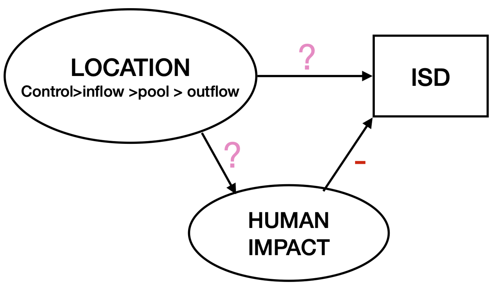
The design compares four positions in each of 16 Swiss streams: a control reach 500 m away from any beaver influence, the inflow where the stream slows into the pond, the pond itself, and the outflow 25 m below the dam. Arthropods were collected with three complementary methods — kick-net, suction sampling and emergence traps — so that the aquatic and terrestrial parts of the community are both represented.
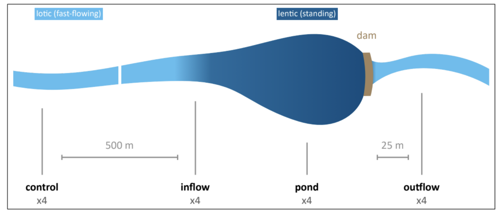
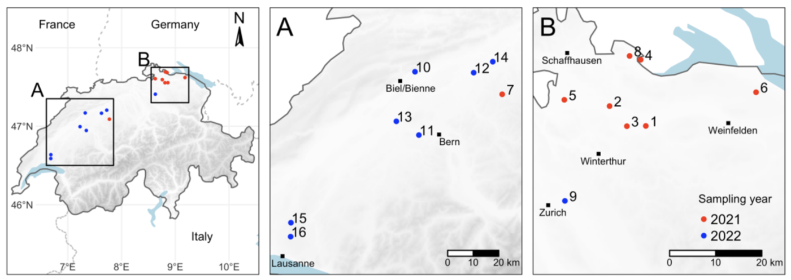
Rather than binning body masses into arbitrary size classes — which is known to bias the estimated exponent — I estimate \(\lambda\) directly from the individual body sizes with a truncated Pareto likelihood in a Bayesian hierarchical model, using the isdbayes package built on brms. This part of the work is developed in collaboration with Jeff S. Wesner (University of South Dakota) and Justin P. F. Pomeranz (Colorado Mesa University), whose methodological work underpins the approach.
Research papers associated:
Moser, V., Minnig, S., Capitani, L., Boch, S., Cramer, N., Edman, O., Hofmann, P., Hürbin, A., Obrist, M. K., Robinson, C., Tinner, D., Zehnder, L., Angst, C., Pomati, F., & Risch, A. C. (2026). Rewilding beyond the wilderness: Beavers can restore stream biodiversity from urban to agricultural to natural landscapes. Journal of Applied Ecology, 63(6), e70439. https://doi.org/10.1111/1365-2664.70439
Moser, V., Capitani, L., Zehnder, L., Hürbin, A., Obrist, M. K., Ecker, K., Boch, S., Minnig, S., Angst, C., Pomati, F., & Risch, A. C. (2025). Habitat heterogeneity and food availability in beaver-engineered streams foster bat richness, activity and feeding. Journal of Animal Ecology, 94(12), 2403–2420. https://doi.org/10.1111/1365-2656.70136
Project leaders
Anita C. Risch
- Project lead · group leader, Community Ecology
- 🏦 WSL, Switzerland
- 🔗 Profile
Francesco Pomati
- Project lead · group leader, Department of Aquatic Ecology
- 🏦 Eawag, Switzerland
- 🔗 Profile
Core collaborators
Valentin Moser
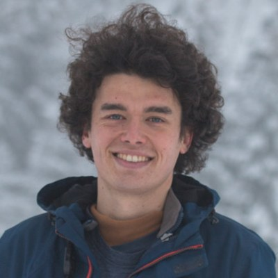
- Ph.D. student on the project, co-advised by me
- 🏦 WSL & Eawag, Switzerland
- 🔗 Website
Aline Frossard
- Soil microbial ecology
- 🏦 WSL, Switzerland
- 🔗 Profile
Steffen Boch
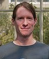
- Plant diversity
- 🏦 WSL, Switzerland
- 🔗 Profile
Christof Angst
- Beaver ecology and management · head of the national beaver office
- 🏦 info fauna – Nationale Biberfachstelle, Neuchâtel, Switzerland
- 🔗 info fauna
Annegret Larsen
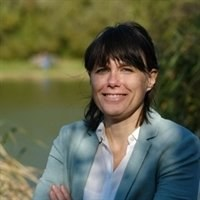
- Fluvial geomorphology and beaver-driven carbon storage
- 🏦 Wageningen University & Research, Netherlands
- 🔗 Profile
Joshua R. Larsen
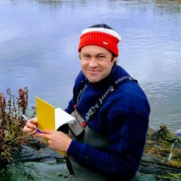
- Hydrology, ecohydrology and biogeochemistry
- 🏦 University of Birmingham, United Kingdom
- 🔗 Profile
Matthew Dennis
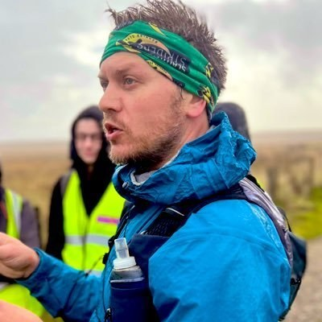
- Computational landscape ecology and species reintroductions
- 🏦 University of Manchester, United Kingdom
- 🔗 Profile
Silvan Minnig
- Environmental education and beaver field survey
- 🏦 umweltbildner.ch, Switzerland
Dominic Tinner and Julia Holmes
- M.Sc. students on the project
- 🏦 WSL, Switzerland
- 🔗 Dominic Tinner